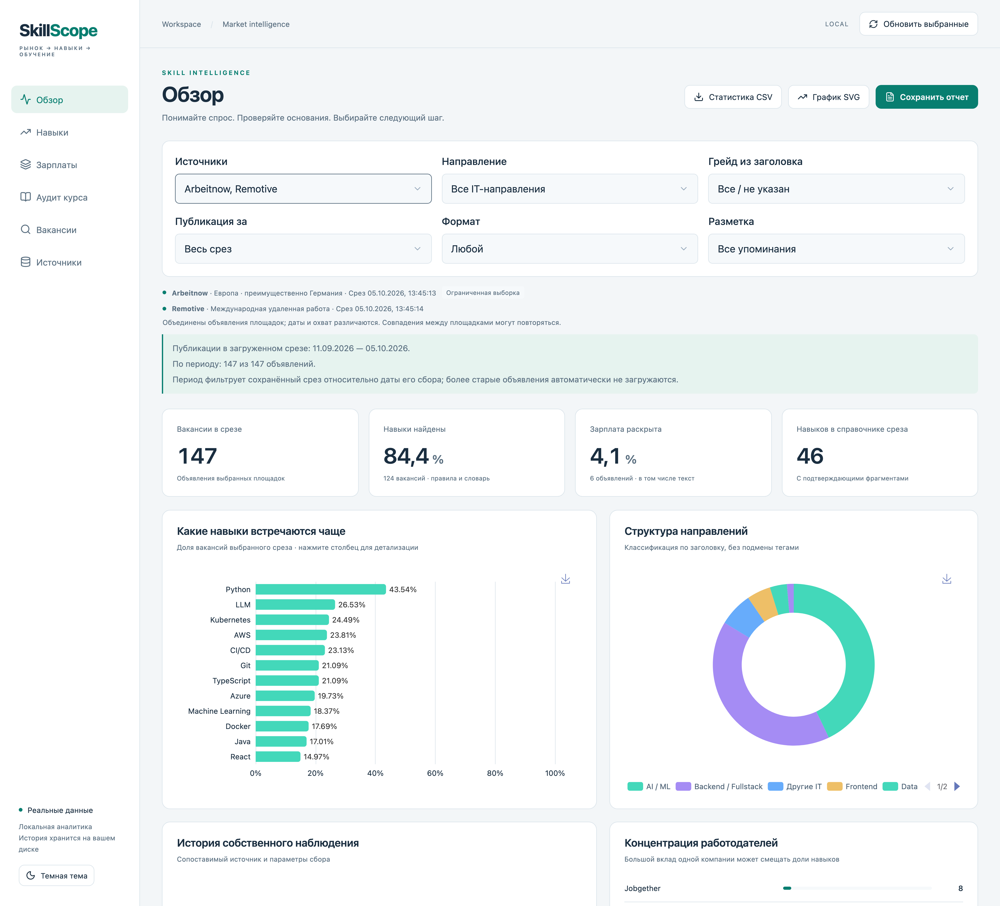
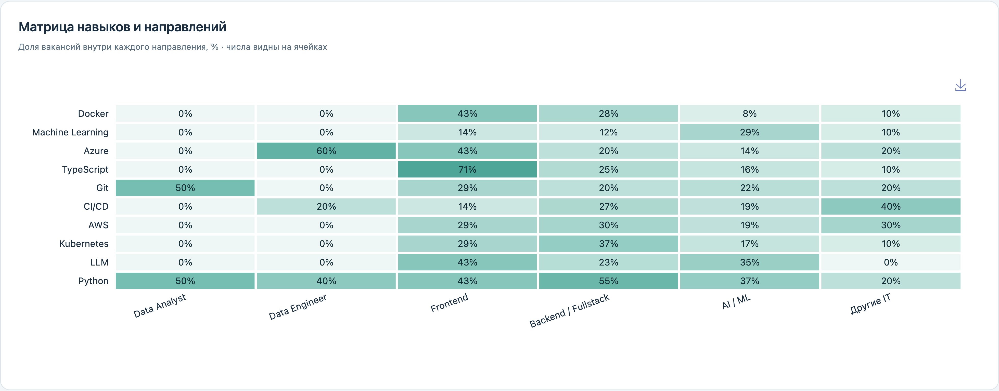
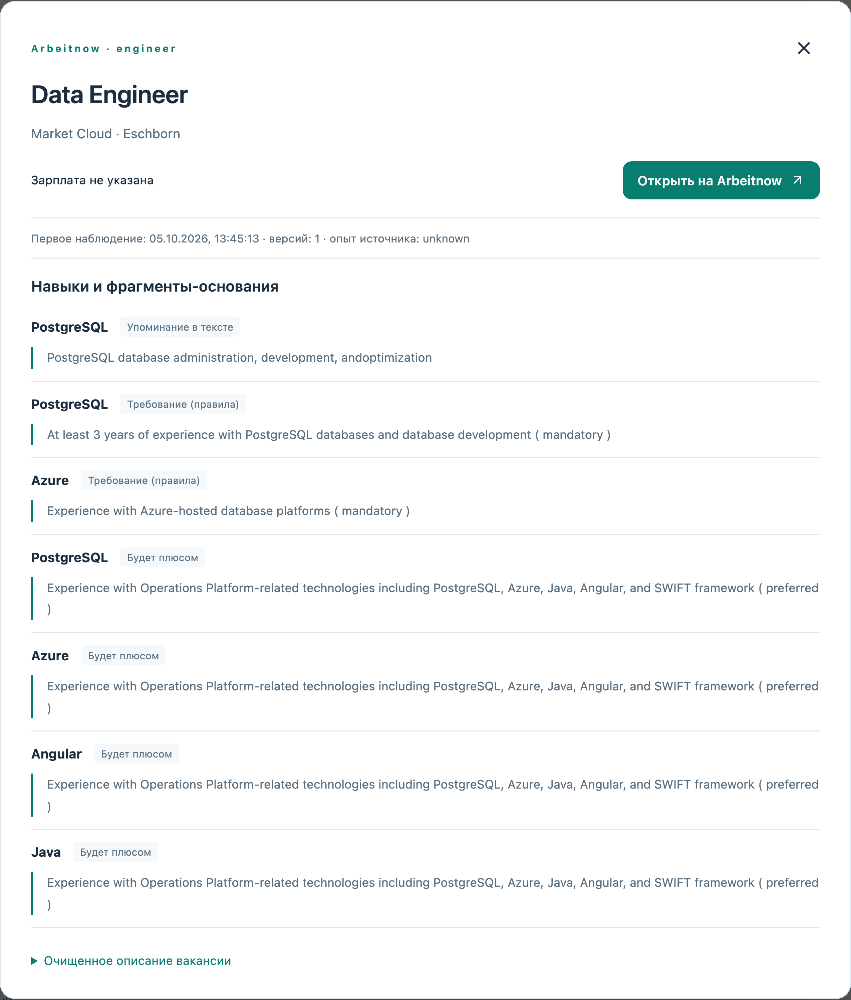
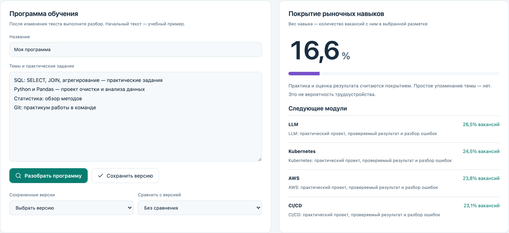
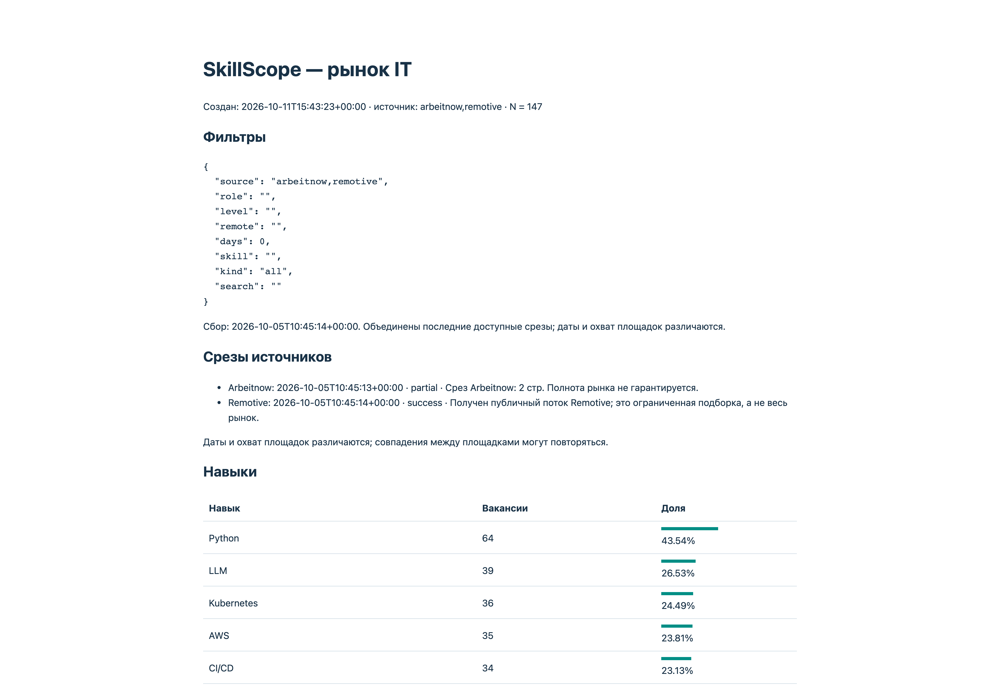

SKILLSCOPE / АНАЛИТИКА НАВЫКОВ И ОБУЧЕНИЯ
От требований работодателей к программе обучения
SkillScope собирает IT-вакансии, выделяет навыки и сопоставляет их с учебной программой. Приложение помогает увидеть, какие темы востребованы в выбранном срезе и где программе не хватает практики.
Пользователь может проверить основания в текстах вакансий, уточнить глубину обучения и сохранить отчёт для обсуждения изменений программы.
Рабочее локальное приложение · Реальные вакансии и учебный пример

01 / ЗАДАЧА
Связать содержание обучения с наблюдаемыми требованиями рынка
Для анализа учебной программы недостаточно списка популярных технологий. Нужно понимать, в каких вакансиях встречается навык, является ли он требованием или только упоминанием и есть ли в программе задания для его освоения.
Ручной просмотр объявлений и сопоставление с темами курса затрудняют повторную проверку: меняются вакансии, фильтры и сама программа.
Требовалось объединить сбор, анализ навыков и аудит обучения в одном приложении, сохранив проверяемые основания и версии результата.
02 / РЕШЕНИЕ
Как работает SkillScope
От общей статистики к проверяемым основаниям
Фильтры по источникам, направлению, грейду, формату работы, возрасту публикации и виду разметки задают выборку для анализа. Рейтинг и матрица показывают, как отличаются навыки между IT-направлениями.
Из анализа можно перейти к вакансиям и проверить конкретные цитаты. Автоматическая разметка остаётся объяснимой: пользователь видит исходный фрагмент, а не только итоговый процент.


03 / ИНЖЕНЕРИЯ
Ключевые решения при разработке
Вклад автора — постановка задачи, выбор сценария «рынок → навыки → обучение», требования к проверяемости и сохранению результатов, разработка с помощью ИИ и проверка приложения. Во время работы SkillScope внешняя ИИ-модель не используется.
04 / РЕЗУЛЬТАТ
Основания для доработки учебной программы
SkillScope позволяет пройти путь от реальных объявлений к списку навыков, пробелам программы и сохранённому отчёту. Пользователь видит, какие темы стоит проверить и где добавить практические задания.
В показанном срезе от 5 октября 2026 года объединены 136 IT-объявлений Arbeitnow и 11 Remotive. Навыки найдены в 124 из 147 объявлений; Python встречается в 64 объявлениях — 43,54% при выборе «Все упоминания». Это показатель конкретной выборки, а не всего рынка или только обязательных требований.
Учебная программа на снимках — демонстрационный пример. Процент покрытия взвешен по частоте навыков в вакансиях и не измеряет качество курса или вероятность трудоустройства.


Проверка работоспособности
При подготовке кейса повторно прошли 43 автоматических теста и production-сборка интерфейса. Тесты проверяют обработку данных, фильтры, контекстные правила, версии программы, экспорт и неизменность отчёта.
Скриншоты сделаны в работающем приложении на копии сохранённой базы. Проверены обзор, матрица, карточка вакансии, разбор учебного примера и создание HTML-отчёта. Новый сетевой сбор для кейса не выполнялся.
Данные ограничены срезами источников; доступ HH в предыдущей проверке возвращал 403 и здесь не заявляется как подтверждённый. Независимая оценка точности разметки не проведена. Интерфейс приложения пока русский; описание кейса подготовлено на RU/EN.
05 / ТЕХНОЛОГИИ